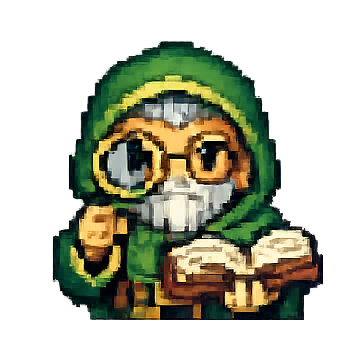
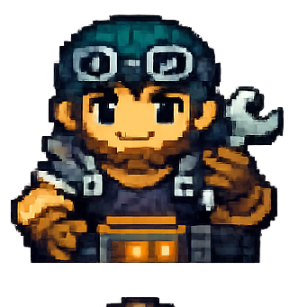
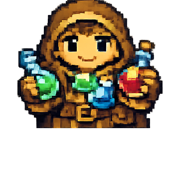
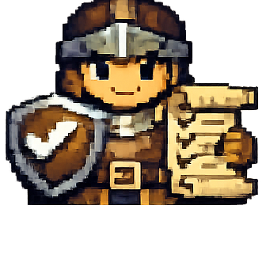
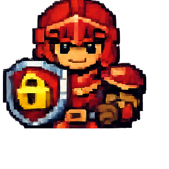

Cockpit de Pandacorp — 3 direcciones de diseño
Un panel de ingeniería con alma de RPG para operar tu fábrica de software 100% IA. Tres direcciones genuinamente distintas, las tres con light + dark, gamificación honesta, y convivencia fluida con los sprites pixel-art cálidos fijos. Elige una y la congelamos.







Estos sprites y los fondos de zona son insumos fijos: las 3 direcciones se construyen para enmarcarlos sin que choquen.
1 · Pergamino
Cálido clásico · serif
AcentoTerracota / ascuaFormasEsquinas suavesTipoSpectral + Public SansAlmaDashboard sobrio con pergamino
2 · Cripta
Tierra apagada · pixel
AcentoOro de questFormasBordes pixel duros / biselTipoPixelify Sans + IBM PlexAlmaGremio de noche, menú JRPG
Documentación del sistema
Investigación, tokens y reglas que sostienen las 3 direcciones.
referencias.md
Investigación: paletas, enmarcar pixel-art, refs externas
design-tokens.frozen.json
CONGELADO · Atelier dark (azul-acero) + light + alto-contraste
paleta-atelier.html
Paleta visual congelada · surfaces, acento, semánticos, agentes
decisiones-de-diseno.md
Racional de la elección + ajuste de color + pendientes
design-tokens.json
Las 3 direcciones (exploración) en OKLCH
DESIGN.md
Tokens + componentes permitidos + prohibiciones
a11y-report.md
Contraste medido (AA), foco, teclado, aria, motion
Pruébalas en vivo. Cada mockup es navegable: cambia de pestaña (Mission Control, Tablero, Portfolio, Logros, Configuración, Documentación), alterna claro/oscuro y alto-contraste arriba a la derecha, cambia el modo de construcción del party, y prueba las celebraciones desde el dock inferior («Work order», «Fase», «Release», «Subir nivel», «Reduced-motion»).
Cuando elijas, congelo
design-tokens.json + un doc de decisiones de diseño con el racional. Dime también si quieres que ajuste algo de la dirección elegida.